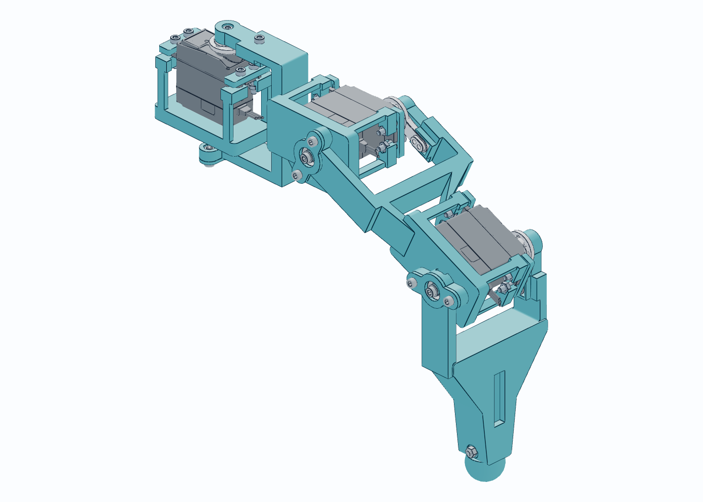

6 条三关节腿18 个舵机STEP 实体交换
PERSONAL PROJECT / 机械原型
六足机器人：从连接晃动
到可试装的结构接口
围绕现有舵机与控制器，设计三关节腿、双侧支撑与分段机身。早期打印试装将晃动定位到腿架与金属舵盘连接，再迭代贴合承台、两点压紧和后备止转。
- build123d / OCP 参数化建模，输出 STEP、STL、零件表与装配说明。
- 螺母装入路径、螺丝盲孔余量、线缆让位与自由面间隙分别检查。
- V12 资料记载 82 个单腿采样姿态通过，属于离散 CAD 检查。
验证边界：早期零件已试装；V12 新接口、整机载荷与行走性能待实测。后续 V15 为机身翻装减重候选，不能沿用 V12 的验证结论。